Fonte: gare di altri paesi/India/chimica/NSEC_2023_Question.pdf · Apri PDF · apri PDF p.1
Cluster: Meccanica
Soluzioni (stessa cartella): · · · · · · · · · · · · · ·
Problema 1
The ligand with which the homoleptic octahedral complex of Co will be most stable is:
(A) Ethylenediamine tetra acetate ion (B) Dien (N-(2-aminoethyl)-1,2-ethanediamine) (C) Ethane-1,2-diamine (D) Ammonia
Topic: Electrostatics Metodi: Physical Modeling Competenze: Physical Reasoning Fonte: Testo (PDF) — p.3
Problema 2
Which of the following properties may have positive values of ?
(i) Lattice enthalpy (ii) Hydration enthalpy (iii) Electron gain enthalpy for noble gases (iv) Ionisation enthalpy
(A) (i) and (ii) (B) (iii) and (iv) (C) Only (iv) (D) (ii), (iii) and (iv)
Topic: Thermodynamics Metodi: First Law of Thermodynamics Competenze: Physical Reasoning Fonte: Testo (PDF) — p.3
Problema 3
The correct IUPAC name of potassium permanganate is:
(A) potassium tetraoxomanganate(VI) (B) potassium tetraoxidopermanganate(VII) (C) potassium tetraoxidomanganese(VII) (D) potassium tetraoxidomanganate(VII)
Topic: Electrostatics Metodi: Physical Modeling Competenze: Physical Reasoning Fonte: Testo (PDF) — p.3
Problema 4
Which of the following statements is true with respect to sodium salts of oxoanions of phosphorus NaHPO and NaHPO?
(A) NaHPO is reducing and NaHPO is oxidizing (B) NaHPO is more reducing than NaHPO (C) NaHPO is more oxidizing than NaHPO (D) NaHPO is oxidizing and NaHPO is reducing
Topic: Electrostatics Metodi: Physical Modeling Competenze: Physical Reasoning Fonte: Testo (PDF) — p.3
Problema 5
The fluoride/s of xenon, XeF ( or or ), which on complete hydrolysis gives back xenon as one of the products, is/are:
I. XeF II. XeF III. XeF
(A) II only (B) I and II (C) III only (D) I, II and III
Topic: Modern-Quantum Physics Metodi: Physical Modeling Competenze: Physical Reasoning Fonte: Testo (PDF) — p.3
Problema 6
If an element after oganesson (Og, atomic number 118 and electronic configuration [Rn] 5f 6d 7s 7p) was discovered, in which of the following orbital will the 119 electron be accommodated?
(A) 7d (B) 6f (C) 8s (D) 5g
Topic: Modern-Quantum Physics Metodi: Bohr Model & Quantization Competenze: Physical Reasoning Fonte: Testo (PDF) — p.3
Problema 7
The number of ‘two-center-two electron’ and ‘three-center-two electron’ bonds in [Al(BH)] are respectively:
(A) twelve and zero (B) twelve and three (C) six and six (D) nine and three
Topic: Modern-Quantum Physics Metodi: Physical Modeling Competenze: Physical Reasoning Fonte: Testo (PDF) — p.3
Problema 8
Identify the correct matching of the following oxides in column M with their property in column N:
| M | N |
|---|---|
| (i) Aluminium trioxide | (p) Acidic oxide |
| (ii) Calcium oxide | (q) Basic oxide |
| (iii) Arsenic pentoxide | (r) Amphoteric oxide |
(A) (i)-(p), (ii)-(q), (iii)-(r) (B) (i)-(q), (ii)-(r), (iii)-(p) (C) (i)-(r), (ii)-(q), (iii)-(p) (D) (i)-(r), (ii)-(p), (iii)-(q)
Topic: Electrostatics Metodi: Physical Modeling Competenze: Physical Reasoning Fonte: Testo (PDF) — p.4
Problema 9
In each of the following reactions, the role of water is:
(i) HO + HCl HO + Cl (ii) 6HO + Mg [Mg(HO)] (iii) 2HO + 2F 4HF + O
(A) (i) oxidant; (ii) reductant; (iii) base (B) (i) reductant; (ii) oxidant; (iii) base (C) (i) base; (ii) base; (iii) reductant (D) (i) acid; (ii) base; (iii) reductant
Topic: Electrostatics Metodi: Physical Modeling Competenze: Physical Reasoning Fonte: Testo (PDF) — p.4
Problema 10
The correct order of the following oxidizing agents in basic aqueous medium is:
(A) (B) (C) (D)
Topic: Electrostatics Metodi: Electric Potential Method Competenze: Physical Reasoning Fonte: Testo (PDF) — p.4
Problema 11
The correct order of ionic radii of Rb, Br, Sr and Se is:
(A) Rb < Br < Sr < Se (B) Sr < Rb < Br < Se (C) Se < Br < Sr < Rb (D) Se < Sr < Rb < Br
Topic: Modern-Quantum Physics Metodi: Physical Modeling Competenze: Physical Reasoning Fonte: Testo (PDF) — p.4
Problema 12
Consider the following statements:
(i) Calcination is carried out in absence of air below the melting point of the ore (ii) Roasting and calcination are carried out in presence of flux (iii) Calcination is carried out in limited supply of air above the melting point of the ore (iv) Roasting is carried out in air below the melting point of ore
The correct set of statements is:
(A) (i) and (iv) (B) (ii) and (iii) (C) (i), (iii) and (iv) (D) (iii) and (iv)
Topic: Thermodynamics Metodi: Physical Modeling Competenze: Physical Reasoning Fonte: Testo (PDF) — p.4
Problema 13
The cobalt complexes (I) and (II) given below are examples of:
(A) linkage isomers (B) coordination isomers (C) ligand isomers (D) coordination position isomers
Topic: Electrostatics Metodi: Physical Modeling, Symmetry Argument Competenze: Physical Reasoning Fonte: Testo (PDF) — p.4
Problema 14
The magnetic moment (in units of BM) of copper in and respectively is:
(A) 1.73 and 0 (B) 1.73 and 1.73 (C) 2.83 and 2.83 (D) 0 and 2.83
Topic: Modern-Quantum Physics, Magnetism Metodi: Bohr Model & Quantization Competenze: Physical Reasoning Fonte: Testo (PDF) — p.4
Problema 15
In qualitative inorganic analysis of a water-soluble salt mixture (salt AB + salt XY) both the cations were identified as sulphides. In the tests for anions, sodium carbonate extract when treated with AgNO gave yellowish precipitate soluble with difficulty in NHOH, while the other anion can be confirmed with brown ring test. (Given for AS = and XS = ).
Identify the INCORRECT statement about the analysis.
(A) HS can be used under appropriate conditions of pH to separate and identify the cations. (B) Cation A will be precipitated under acidic condition as the concentration of sulphide ions required is low. (C) The anions are NO and Cl. (D) Cation X will be precipitated as sulphides under alkaline condition, as the concentration of sulphide ions required is very high.
Topic: Electrostatics Metodi: Physical Modeling Competenze: Physical Reasoning Fonte: Testo (PDF) — p.5
Problema 16
The correct statement about the solubilities of Group 2 hydroxides is:
(A) The solubilities increase because lattice energy increases as we go down Group 2 (B) The solubilities increase because lattice energy decreases as we go down Group 2 (C) The solubilities decrease because atomic size increases as we go down Group 2 (D) The solubilities decrease because lattice energy decreases as we go down Group 2
Topic: Electrostatics, Thermodynamics Metodi: Physical Modeling Competenze: Physical Reasoning Fonte: Testo (PDF) — p.5
Problema 17
A solution of CuSO5HO in methanol has [Cu] = 1.00 mg per 1000 g of methanol. The molarity of Cu in this solution is mol L. is: (Given: density of methanol = 0.792 g mL)
(A) 1.57 (B) 5.04 (C) 1.25 (D) 3.99
Topic: Thermodynamics Metodi: Dimensional Analysis Competenze: Unit Conversion, Mathematical Modeling Fonte: Testo (PDF) — p.5
Problema 18
Following is the reaction flow chart for manganese oxido-complexes under different alkaline pH conditions. Compounds (S) and (T) respectively are:
(A) S = MnO(OH); T = Mn(OH) (B) S = MnO; T = MnO(OH) (C) S = MnO; T = MnO(OH) (D) S = MnO; T = MnO
Topic: Electrostatics Metodi: Electric Potential Method Competenze: Physical Reasoning Fonte: Testo (PDF) — p.5
Problema 19
The correct order of relative strength for the following nucleophilic species is:
I: NH II: OCH III: CHCOO IV: CHOH
(A) IV > III > II > I (B) II > III > IV > I (C) I > II > IV > III (D) I > II > III > IV
Topic: Electrostatics Metodi: Physical Modeling Competenze: Physical Reasoning Fonte: Testo (PDF) — p.5
Problema 20
The product obtained on reaction of optically pure 1-bromo-1-phenyl ethane with CHOH is:
(A) phenyl ethene. (B) 1-methoxy-1-phenyl ethane with inverted configuration only. (C) 1-methoxy-1-phenyl ethane with retention of configuration. (D) a racemic mixture of 1-methoxy-1-phenyl ethane.
Topic: Modern-Quantum Physics Metodi: Physical Modeling, Symmetry Argument Competenze: Physical Reasoning Fonte: Testo (PDF) — p.5
Problema 21
An alkane [X] contains five 1°, two 2°, one 3° and one 4° carbon atoms. The IUPAC name of [X] is:
(A) 2,4,4-trimethylhexane (B) 3,5-dimethylheptane (C) 2,4-dimethylheptane (D) 4,4-dimethylheptane
Topic: Modern-Quantum Physics Metodi: Physical Modeling Competenze: Physical Reasoning, Diagrammatic Reasoning Fonte: Testo (PDF) — p.6
Problema 22
The number of isomeric alkenes with molecular formula CH is (taking stereoisomers into account):
(A) 4 (B) 5 (C) 6 (D) 7
Topic: Modern-Quantum Physics Metodi: Physical Modeling, Symmetry Argument Competenze: Physical Reasoning Fonte: Testo (PDF) — p.6
Problema 23
At 0°C, 1 equivalent bromine is added to 2,4-hexadiene to produce 4,5-dibromo-2-hexene and its isomer ‘X’. ‘X’ is:
(A) 5,5-dibromo-2-hexene (B) 2,5-dibromo-3-hexene (C) 2,2-dibromo-3-hexene (D) 2,3-dibromo-4-hexene
Topic: Modern-Quantum Physics Metodi: Physical Modeling Competenze: Physical Reasoning Fonte: Testo (PDF) — p.6
Problema 24
Which of the following is/are example/s of an acetal?
(A) I and II (B) III and IV (C) Only IV (D) I, II and III
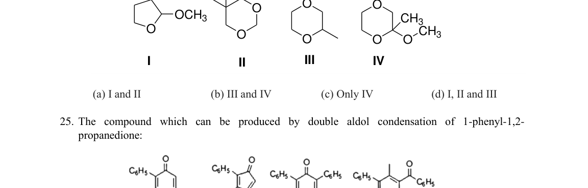
Structures I–IV, acetal identificationTopic: Modern-Quantum Physics Metodi: Physical Modeling Competenze: Physical Reasoning, Diagrammatic Reasoning Fonte: Testo (PDF) — p.6
Problema 25
The compound which can be produced by double aldol condensation of 1-phenyl-1,2-propanedione:
(A) P (B) Q (C) R (D) S
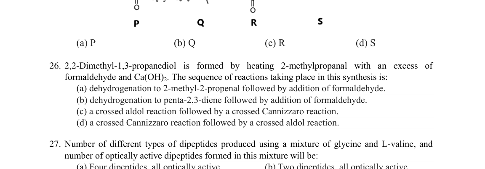
Products P, Q, R, S of aldol condensationTopic: Modern-Quantum Physics Metodi: Physical Modeling Competenze: Physical Reasoning, Diagrammatic Reasoning Fonte: Testo (PDF) — p.6
Problema 26
2,2-Dimethyl-1,3-propanediol is formed by heating 2-methylpropanal with an excess of formaldehyde and Ca(OH). The sequence of reactions taking place in this synthesis is:
(A) dehydrogenation to 2-methyl-2-propenal followed by addition of formaldehyde. (B) dehydrogenation to penta-2,3-diene followed by addition of formaldehyde. (C) a crossed aldol reaction followed by a crossed Cannizzaro reaction. (D) a crossed Cannizzaro reaction followed by a crossed aldol reaction.
Topic: Modern-Quantum Physics Metodi: Physical Modeling Competenze: Physical Reasoning Fonte: Testo (PDF) — p.6
Problema 27
Number of different types of dipeptides produced using a mixture of glycine and L-valine, and number of optically active dipeptides formed in this mixture will be:
(A) Four dipeptides, all optically active (B) Two dipeptides, all optically active (C) Four dipeptides, three optically active (D) Two dipeptides, none optically active
Topic: Modern-Quantum Physics Metodi: Physical Modeling, Symmetry Argument Competenze: Physical Reasoning Fonte: Testo (PDF) — p.7
Problema 28
Predict the major product in the following reaction (PCC is pyridinium chlorochromate):
(A) (ketone) (B) unsymmetric ketone (C) (aldehyde) (D) diketone
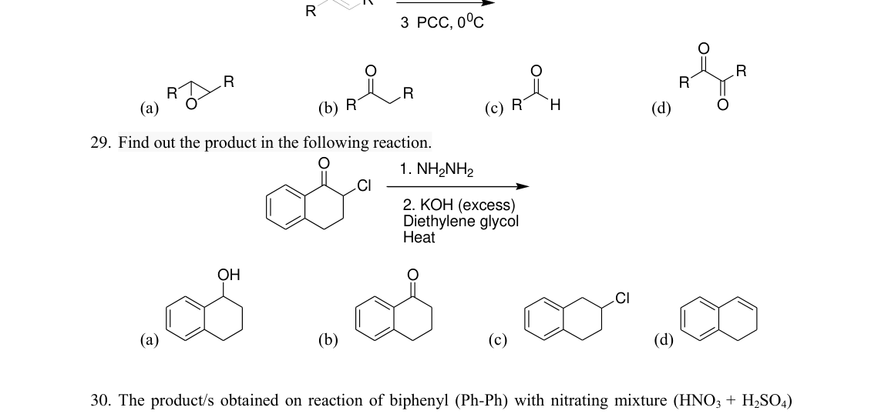
Reaction scheme and products A–DTopic: Modern-Quantum Physics Metodi: Physical Modeling Competenze: Physical Reasoning, Diagrammatic Reasoning Fonte: Testo (PDF) — p.7
Problema 29
Find out the product in the following reaction:
(A) ArCHOH (B) ArCHO (C) ArCHCl (D) ArCH
(Wolff–Kishner reduction of an acyl chloride derivative)
Reaction scheme with products A–D
Topic: Modern-Quantum Physics Metodi: Physical Modeling Competenze: Physical Reasoning, Diagrammatic Reasoning Fonte: Testo (PDF) — p.7
Problema 30
The product/s obtained on reaction of biphenyl (Ph–Ph) with nitrating mixture (HNO + HSO) is/are:
(A) only para-nitrobiphenyl (B) only ortho-nitrobiphenyl (C) both ortho- and para-nitrobiphenyl (D) only meta-nitrobiphenyl
Topic: Modern-Quantum Physics Metodi: Physical Modeling Competenze: Physical Reasoning Fonte: Testo (PDF) — p.7
Problema 31
Chlorination of propane gives four dichloro products. One of them is optically active. The number of trichloro products possible from the optically active dichloro product is (excluding stereoisomers):
(A) 1 (B) 2 (C) 3 (D) 4
Topic: Modern-Quantum Physics Metodi: Physical Modeling, Symmetry Argument Competenze: Physical Reasoning Fonte: Testo (PDF) — p.7
Problema 32
The suitable reagent for the following transformation is:
(A) Na / liq. NH (B) H, Pd/C (C) LiAlH (D) Zn–Hg, HCl, heat
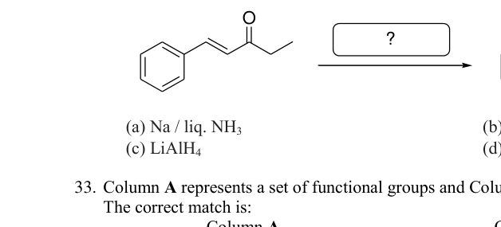
Ketone to alcohol transformationTopic: Modern-Quantum Physics Metodi: Physical Modeling Competenze: Physical Reasoning Fonte: Testo (PDF) — p.8
Problema 33
Column A represents a set of functional groups and Column B their respective electronic effects. The correct match is:
(A) –NH, –COCl, –SOH, –COOH; m-directing, EWG, activating, o/p-directing (B) –X, –NHCOCH, –CHO, –CH; o/p directing, EDG, m-directing, activating (C) –COCl, –COCH, –NH, –CN; EDG, EWG, deactivating, m-directing (D) –SOH, –NH, –OCH, –CONH; activating, deactivating, EWG, EWG
[EDG: Electron donating group; EWG: Electron withdrawing group]
Topic: Electrostatics Metodi: Physical Modeling Competenze: Physical Reasoning Fonte: Testo (PDF) — p.8
Problema 34
The correct order of reactivity of –CHO, –COR, –COOR, –CONR groups toward MeMgI in ether is:
(A) –CONR > –COOR > –COR > –CHO (B) –CHO > –COR > –COOR > –CONR (C) –CONR > –CHO > –COR > –COOR (D) –CHO > –CONR > –COOR > –COR
Topic: Electrostatics Metodi: Physical Modeling Competenze: Physical Reasoning Fonte: Testo (PDF) — p.8
Problema 35
The plots of energy density (energy per unit area) vs wavelength for blackbody radiation at various temperatures is given below.
The correct option among the following is:
(i) (ii) As temperature increases, the wavelength at which the intensity is maximum shifts towards the higher energy regions of the electromagnetic spectrum. (iii) Radiations of all wavelengths are emitted, absorbed, reflected, and refracted by the black body. (iv) The total energy density increases as the temperature is decreased.
(A) (i) and (ii) (B) (ii) and (iii) (C) (i), (iii) and (iv) (D) (ii), (iii) and (iv)
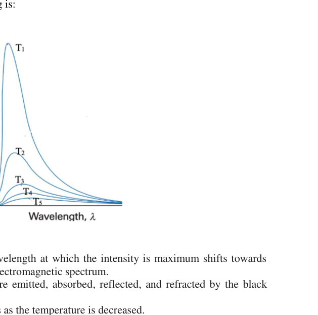
Energy density vs wavelength blackbody curvesTopic: Thermodynamics, Modern-Quantum Physics Metodi: Physical Modeling, Photon Energy Relation Competenze: Physical Reasoning, Diagrammatic Reasoning Fonte: Testo (PDF) — p.8
Problema 36
A student adds g of iron (Fe) powder to dil. HCl and measures the work done by the reaction between HCl and the added Fe to be 1000 J. If the experiment was conducted at a constant pressure of 1 atm at 27°C, mass of Fe powder added is:
(A) 22.4 g (B) 2.24 g (C) 11.2 g (D) 1.12 g
Topic: Thermodynamics Metodi: First Law of Thermodynamics, Ideal Gas Law Competenze: Mathematical Modeling, Physical Reasoning Fonte: Testo (PDF) — p.9
Problema 37
Antacids are medicines that temporarily neutralize the acid in the stomach and prevent heartburns. The volume of an antacid syrup containing 2.9 g of Mg(OH) per 100 mL to be given to a patient whose stomach contains 2 L of gastric juice with HCl concentration of mol L is: (Molar mass of Mg(OH) = 58.0 g mol)
(A) 4.0 mL (B) 7.8 mL (C) 12.0 mL (D) 120 mL
Topic: Thermodynamics Metodi: Dimensional Analysis Competenze: Mathematical Modeling, Unit Conversion Fonte: Testo (PDF) — p.9
Problema 38
A half-cell reaction represented by (i) as given below:
takes place in two different electrochemical cells, I and II, in which the other half-cell reactions are (ii) and (iii) respectively:
The correct option that represents the redox reactions in cells I and II is:
(A) Fe is oxidised in cell I; Fe is oxidised in cell II (B) Fe is oxidised in cell I; Fe is reduced in cell II (C) Fe is reduced in cell I; Fe is reduced in cell II (D) Fe is reduced in cell I; Fe is oxidised in cell II
Topic: Electrostatics, Circuits Metodi: Electric Potential Method, Conservation Laws Competenze: Physical Reasoning, Mathematical Modeling Fonte: Testo (PDF) — p.9
Problema 39
The following are the concentration vs time plots of the reactants and products represented by the reaction
The curves that represent M(g) and N(g) qualitatively are respectively:
(A) X, Y (B) Y, U (C) V, Y (D) U, X
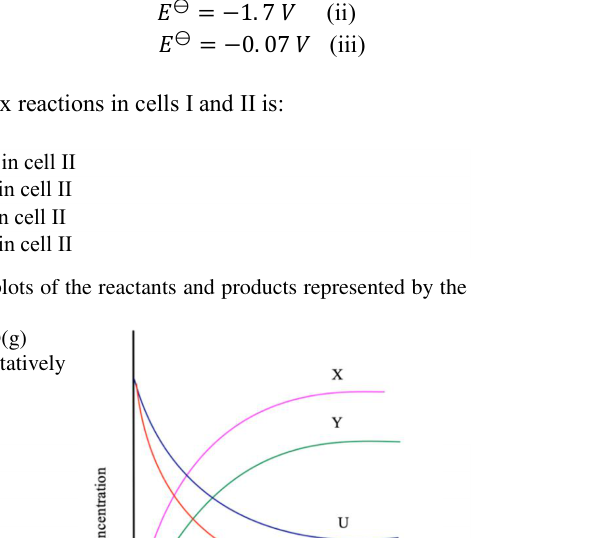
Concentration vs time curves X,Y,U,VTopic: Kinetic Theory Metodi: Experimental Data Analysis, Graph Linearization Competenze: Diagrammatic Reasoning, Physical Reasoning Fonte: Testo (PDF) — p.9
Problema 40
The current produced due to photoelectric effect:
(A) increases with the increase of frequency of the incident radiation. (B) increases with the increase in intensity of the incident radiation. (C) decreases with time of irradiation. (D) is independent of the intensity of incident radiation.
Topic: Modern-Quantum Physics Metodi: Photon Energy Relation Competenze: Physical Reasoning Fonte: Testo (PDF) — p.9
Problema 41
The property of radiation that is not different at various regions of the electromagnetic spectrum is:
(A) energy (B) frequency (C) velocity (D) wavelength
Topic: Modern-Quantum Physics, Wave Optics Metodi: Physical Modeling Competenze: Physical Reasoning Fonte: Testo (PDF) — p.9
Problema 42
Among the following, the correct statements about the compressibility factor () of real gases are:
(i) If , intermolecular repulsive forces are more dominant. (ii) If , intermolecular attractive forces are more dominant. (iii) If , intermolecular repulsive forces are more dominant. (iv) If , intermolecular attractive forces are more dominant.
(A) (i) and (iv) (B) (i) and (iii) (C) (ii) and (iv) (D) (ii) and (iii)
Topic: Kinetic Theory, Thermodynamics Metodi: Ideal Gas Law, Kinetic Theory of Gases Competenze: Physical Reasoning Fonte: Testo (PDF) — p.10
Problema 43
The figure represents the processes AB, BC and CA undertaken by a certain mass of an ideal gas. Along the path AB, the gas is isothermally compressed with release of 800 J heat to the surroundings. It is then compressed adiabatically along the path BC and the work done is 500 J. The gas then returns to the state A along path CA and absorbs 100 J heat from the surroundings. The work done by the gas along the path CA is:
(A) −300 J (B) −900 J (C) −600 J (D) −400 J
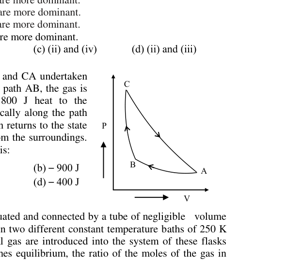
P-V diagram with paths AB, BC, CATopic: Thermodynamics Metodi: First Law of Thermodynamics, Thermodynamic Cycle Analysis Competenze: Physical Reasoning, Mathematical Modeling Fonte: Testo (PDF) — p.10
Problema 44
Two flasks I and II of equal volume are evacuated and connected by a tube of negligible volume fitted with a stopcock. They are then placed in two different constant temperature baths of 250 K and 750 K respectively. 20 moles of an ideal gas are introduced into the system of these flasks through the stopcock. When the system reaches equilibrium, the ratio of the moles of the gas in flasks I and II is:
(A) 1 : 1 (B) 2 : 1 (C) 3 : 1 (D) 4 : 1
Topic: Thermodynamics, Kinetic Theory Metodi: Ideal Gas Law, Kinetic Theory of Gases Competenze: Physical Reasoning, Mathematical Modeling Fonte: Testo (PDF) — p.10
Problema 45
When a certain amount of a univalent salt AB (molar mass = 54 g mol) was dissolved in 0.1 kg of water, the relative lowering of the vapour pressure was found to be 3.55%. The molality of the resulting solution is: (Assume complete dissociation of the salt under given condition. Density of water = 1 g mL)
(A) 0.5 m (B) 1.0 m (C) 2.0 m (D) 4.0 m
Topic: Thermodynamics Metodi: Ideal Gas Law, Dimensional Analysis Competenze: Mathematical Modeling, Physical Reasoning Fonte: Testo (PDF) — p.10
Problema 46
The rate constant values for the decay of radioisotopes X and Y, used in radio-medicine are 0.05 h and 0.025 h respectively. In a hospital, at a time the activity of a sample of X was found to be twice that of Y. The activities of the two radioisotopes will be approximately equal when the time elapsed is:
(A) twice the half-life of Y (B) twice the half-life of X (C) equal to the half-life of X (D) equal to the half-life of Y
Topic: Nuclear & Particle Physics Metodi: Radioactive Decay Law Competenze: Mathematical Modeling, Physical Reasoning Fonte: Testo (PDF) — p.10
Problema 47
Latimer diagrams are the compact representations of electrochemical equilibria in substances of multiple oxidation states. The value of the potential in the Latimer diagram of gold (at pH = 1.0) is:
(with )
(A) 2.72 V (B) 3.18 V (C) −3.18 V (D) 1.36 V
Topic: Electrostatics Metodi: Electric Potential Method, Conservation Laws Competenze: Mathematical Modeling, Physical Reasoning Fonte: Testo (PDF) — p.10
Problema 48
Electrolysis of aqueous CuSO (0.1 M) was carried out in two cells I and II. In I, the electrodes are of Cu and in II they were of Pt. As the electrolysis proceeds, pH of the electrolyte solution will:
(A) decrease in II and remain the same in I (B) remain the same in both I and II (C) increase in both I and II (D) increase in I and decrease in II
Topic: Electrostatics, Circuits Metodi: Electric Potential Method, Kirchhoff’s Laws Competenze: Physical Reasoning Fonte: Testo (PDF) — p.10
Problema 49
Choose the correct statement(s) regarding zeolites:
(A) Silicon atoms are replaced by aluminium atoms in the zeolites. (B) The pores and cavities of the zeolites as well as size and shape of reactant decides the reactions taking place in the zeolites. (C) The cracking of hydrocarbons and isomerisation reactions are catalyzed by zeolites in the petrochemical industries. (D) Zeolites act as molecular sieves and can separate the molecules of different sizes.
Topic: Elasticity & Materials Metodi: Physical Modeling Competenze: Physical Reasoning Fonte: Testo (PDF) — p.11
Problema 50
Crystalline iron(III) nitrate nonahydrate, Fe(NO)9HO, has a very pale violet colour. When added to water, the crystals dissolve to form a brown solution. Treatment of this brown solution with concentrated nitric acid yields a very pale violet solution while treatment with HCl yields a yellow solution.
Identify the correct statements regarding the above observations.
(A) The brown colour is due to , (B) Violet colour is due to and yellow colour due to (C) Addition of HNO shifts the equilibrium to left giving pale violet colour (D) Addition of HNO shifts the equilibrium to right giving violet colour
Topic: Electrostatics Metodi: Physical Modeling Competenze: Physical Reasoning Fonte: Testo (PDF) — p.11
Problema 51
The optically active compounds from the following are:
(i) A hexamethylcyclohexane derivative (ii) A dibromo compound with two stereocenters: Br and CH on opposite sides (trans) (iii) A dibromo compound with Br and CH on same carbon (meso potential) (iv) A dimethylcyclohexane derivative
(A) (i) and (iii) (B) (ii) and (iv) (C) (i), (ii) and (iii) (D) (ii) only
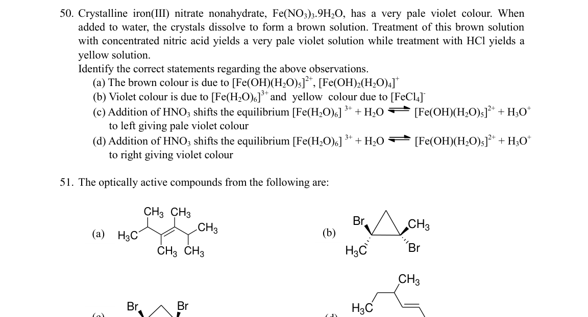
Structures (i)–(iv) for optical activity testTopic: Modern-Quantum Physics Metodi: Physical Modeling, Symmetry Argument Competenze: Physical Reasoning, Diagrammatic Reasoning Fonte: Testo (PDF) — p.11
Problema 52
3-chlorotoluene is reacted with a mixture of conc. HSO and HNO. The product/s formed is/are:
(A) product (i) (B) product (ii) (C) product (iii) (D) product (iv)
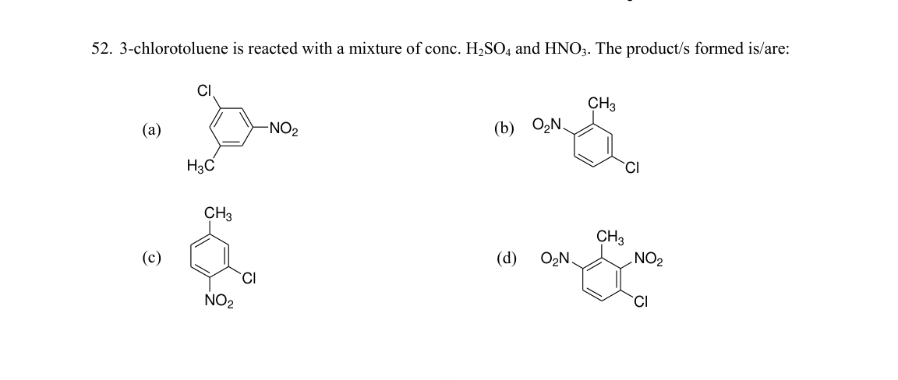
Nitration products (i)–(iv) of 3-chlorotolueneTopic: Modern-Quantum Physics Metodi: Physical Modeling Competenze: Physical Reasoning, Diagrammatic Reasoning Fonte: Testo (PDF) — p.11
Problema 53
2,4,6-trinitrophenol is more acidic than phenol. Identify the correct statement(s):
(A) for 2,4,6-trinitrophenol is less than that of phenol. (B) Phenol is stabilized by intramolecular hydrogen bonding. (C) The conjugate base of 2,4,6-trinitrophenol delocalizes the negative charge on the oxygen atom to a very large extent. (D) The conjugate base of phenol delocalizes the negative charge to a greater extent than the conjugate base of 2,4,6-trinitrophenol.
Topic: Electrostatics Metodi: Physical Modeling Competenze: Physical Reasoning Fonte: Testo (PDF) — p.12
Problema 54
The correct statements for 1,3-butadiene from the following are:
(A) Molar addition of Br yields only 1,4-dibromo-2-butene as the major product when the reaction is performed for longer time period. (B) Molar addition of Br yields only 1,2-dibromo-2-butene for longer time period. (C) C1–C2 and C3–C4 bonds are slightly longer than a C=C bond. (D) C2–C3 single bond is slightly shorter than a C–C bond.
Topic: Modern-Quantum Physics Metodi: Physical Modeling Competenze: Physical Reasoning Fonte: Testo (PDF) — p.12
Problema 55
Which of the following representations will exhibit cis-trans isomerism?
(A) Structure with COOH groups (B) Structure with two CH and two CH groups (symmetric) (C) Structure with CH groups (D) Structure with HC groups on same carbon
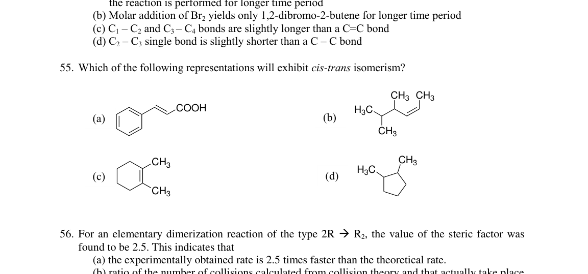
Four molecular structures for cis-trans isomerismTopic: Modern-Quantum Physics Metodi: Physical Modeling, Symmetry Argument Competenze: Physical Reasoning, Diagrammatic Reasoning Fonte: Testo (PDF) — p.12
Problema 56
For an elementary dimerization reaction of the type , the value of the steric factor was found to be 2.5. This indicates that:
(A) the experimentally obtained rate is 2.5 times faster than the theoretical rate. (B) ratio of the number of collisions calculated from collision theory and that actually take place is 1 : 2.5. (C) the activation energy of the reaction is the same for both the experimental and calculated values. (D) the molecules of reactant R may be of some complex structure.
Topic: Kinetic Theory, Thermodynamics Metodi: Kinetic Theory of Gases, Statistical Averaging Competenze: Physical Reasoning Fonte: Testo (PDF) — p.12
Problema 57
The correct statement/s among the following is/are:
(A) The charge on the diffused layer of AgI colloidal solution by the addition of few drops of dilute aqueous solution of KI to an aqueous solution of AgNO is negative. (B) The charge on the diffused layer of AgI colloidal solution by the addition of few drops of dilute aqueous solution of AgNO to an aqueous solution of KI is positive. (C) When the ionic strength of a colloidal solution is increased, thickness of the double layer is increased, and the colloid gets precipitated. (D) When the ionic strength of a colloidal solution is increased, thickness of the double layer is decreased, and the colloid gets precipitated.
Topic: Electrostatics Metodi: Physical Modeling Competenze: Physical Reasoning Fonte: Testo (PDF) — p.12
Problema 58
In reverse osmosis the flow of solvent across semi-permeable membrane occurs:
(A) when hydrostatic pressure is greater than osmotic pressure (B) when hydrostatic pressure is lower than osmotic pressure (C) from higher concentrated solution to lower concentrated solution (D) from lower concentrated solution to higher concentrated solution
Topic: Fluid Mechanics Metodi: Hydrostatic Equilibrium Competenze: Physical Reasoning Fonte: Testo (PDF) — p.12
Problema 59
Given below is the plot of pH vs volume of NaOH added in an acid-base titration. The correct statement/s among the following is/are:
(A) Before the equivalence point, a series of buffer solutions determine the pH. (B) The graph represents the titration of a strong acid with NaOH. (C) At the equivalence point, hydrolysis of the anion of the acid determines the pH. (D) After the equivalence point acid/salt buffer solution determines the pH.
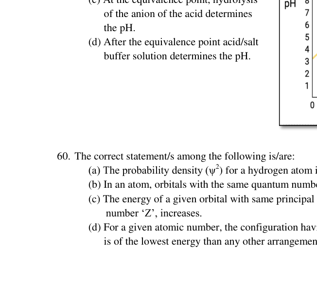
pH vs volume of NaOH titration curveTopic: Electrostatics, Thermodynamics Metodi: Experimental Data Analysis, Graph Linearization Competenze: Diagrammatic Reasoning, Physical Reasoning Fonte: Testo (PDF) — p.13
Problema 60
The correct statement/s among the following is/are:
(A) The probability density () for a hydrogen atom is zero at . (B) In an atom, orbitals with the same quantum number have different energies. (C) The energy of a given orbital with same principal quantum number decreases as the atomic number increases. (D) For a given atomic number, the configuration having the maximum number of parallel spins is of the lowest energy than any other arrangement arising from the same configuration.
Topic: Modern-Quantum Physics Metodi: Bohr Model & Quantization, Physical Modeling Competenze: Physical Reasoning Fonte: Testo (PDF) — p.13